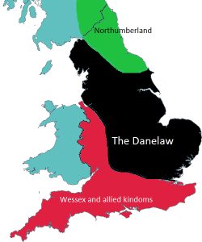

The roots of English

Lots of people have made successful academic careers out of the study of the history of English. This brief guide is not in that league.
 |
Why is this important? |
It isn't, of course, for day-to-day teaching but if you or your
students are interested in the sources of the language you are
teaching and they are learning, it is helpful to know where things
come from.
It will also help to explain some of the less
obvious areas of the structure and lexis of the language and may
even help learners to notice affinities between their first
language(s) and English.
The language family |
English is an Indo-European language. This family of
languages probably originated in the area of Asia just to the north
and west of the Caspian Sea, between it and the Black Sea (although
this is a debatable issue), in what is now south Kazakhstan.
There are around 400 languages in the group, spoken in total by over
3 billion people. The
source of all these languages is known as Proto-Indo-European or PIE.
Here's the map of the presumed expansion of PIE from its homeland:

Source: Wikipedia
Indo-European languages include many now spoken in the south and
east of that area, which include Farsi, Sanskrit (now extinct but
influential),
Hindi, Punjabi and many others,
but we are concerned here with the development of English so we'll focus on the western
groups of languages.
Here's the family tree, much simplified and with fewer examples of
the languages than you will find in more academic texts.
Extinct languages are not included here.

We are talking here about very ancient relationships and languages grow, evolve and change. The origins of PIE are obscure but linguistic and genetic studies are beginning to converge on a date around 6000 years BCE (Before Common Era). A lot can happen in 8000 years.
As you see, there are 5 main branches of western PIE and English belongs to one of them, the West Germanic group which includes Dutch, Flemish and Afrikaans as well as Frisian (its closest relative).
Some analyses will
differ in minor respects, for example, separating Greek and Albanian
or sub-dividing Slavic languages differently as well as including
Modern German as a West Germanic language, descending from the now
extinct Old High German. By that analysis, English and the
other West Germanic languages descend from Low German. Frisian
itself, a language spoken today by around 500,000 people, has two
branches: West Frisian, spoken in The Netherlands and East Frisian,
spoken in parts of Germany and Denmark. Old Frisian and Old
English were so closely related that their speakers were almost
certainly mutually comprehensible. That is no longer the case
for the modern forms of these languages.
None of this detail matters for what follows.
Another, more
complex and inclusive, diagram is in the guide to types of languages,
linked below in the list of related guides.
English grammar, syntax and the lexicon bear witness to its close affinity with other Germanic languages as can easily be seen from the very large numbers of closely similar structures and words in the languages.
 |
Early English roots |
The country that is now England was the northernmost province of the Roman Empire until around 410 CE (Common Era). Shortly afterwards, migrations from the continent, not always peacefully intended or received, began:
- Angles
- (from whose name the word for the language is derived) from Central Denmark who settled in Northern and Eastern England
- Saxons
- from Northern Germany who settled in Southern England
- Jutes
- from Northern Denmark who settled in South-East England
These migrants brought with them a set of closely related and highly inflected languages which formed the basis of Old English. The first writing in a language identifiable as English dates from the seventh century.
By the ninth century, if not before, the original Britons, a Celtic-speaking people had been pushed northwards and westwards and confined to what is now Scotland, Wales and the island of Ireland.
The languages spoken at that time, under the umbrella term of
English were related but not always mutually comprehensible.
Northumbrian (spoken in the North West of England and southern
Scotland and related to the language spoken in East Anglia), Mercian (widely spoken from the Welsh border eastwards to
the western fringe of East Anglia), West Saxon (the language of Wessex in the South and South West of England) and Kentish (spoken
in the South East of England) are all
distinguishable.
It is only by the tenth century with the writings of a
scholar-priest, Ælfric, that an identifiable early standard English
emerges. Even so, the majority of people travelled little and
continued to speak local dialects of English.
The really big change in English |
The history of English, conventionally divided into three periods
(Old, Middle and Early Modern), is one of the gradual loss of
inflexion,
gender and case and a slow
transition to an uninflected and simplified structure.
In other words, the language has moved from being synthetic
(i.e., having lots of endings and other affixes to signal case,
number, person, gender and so on like Modern German, Russian, Greek,
French and Italian) to being analytic (i.e., having
few such characteristics and preferring one morpheme to represent
one idea). Here is an example to make things clear(er):
In Modern German, the past form of go has the root ging (from the infinitive gehen). The way to say you went is du gingst. The -st ending on the verb shows:
- It is singular
- It is familiar rather than polite
- It is in the second person
The -st ending on a verb form will be familiar to anyone who has read the King James Bible or Shakespeare's plays because both use the ending to denote the second person singular familiar form of the verb. Thou hast, of course read Shakespeare, hast thou not?
Similar things to German happen in other synthetic languages, like this, e.g., for the past tense:
| English | Greek | Croatian | Czech | Welsh | Icelandic | German | Old English |
| I went | πήγε [peeghe] | otišao je | šel | aeth | hann fór | ich ginge | ic gewát |
| you went | πηγες [peeges] | što je otišao | jste šel | aethoch | þú fórst | du gingst | þu gewite |
| they went | πήγαν [peeghan] | otišli su | šli | aethant | þeir fóru | sie gingen | hīe gewiton |
In Modern English, by contrast to the other six language examples
and Old English, the past form of go is
went and it is unchanged for all numbers and persons: I
went, you went, she went, he went, it went, we went, they went.
Here, the only change signalled by the form of the verb is tense.
Modern English is at the analytic end of the spectrum, therefore,
but many other Indo-European languages along with Old English are
clearly at the synthetic end.
(If you are wondering why the past tense of go is so
irregular, the answer is that the present form of the verb is
derived from the Old English gan (which shares the root of
the German gehen, the Dutch gaan, the Swedish
gå and so on).
The past tense comes to us by a different root and is derived from
the Old English verb wend (as in wend one's way).
The past of wend was went and that became the
standard past-tense form of go with a new weak, or regular,
past tense for wend of wended.)
Modern English is not fully analytic because it still retains some
inflexions such as the third-person -s ending for present-simple verb
forms (she smokes) and the plural
-s as well as some changes in pronouns (I, me, my,
mine, he, him, his etc.). It is, however, much more analytic than most other Indo-European
languages.
Some languages, such as Mandarin, are even more analytic and usually
referred to as isolating languages.
Similar considerations apply to determiners, nouns and adjectives because in
Old English there were a number of endings on articles, nouns and their
associated adjectives to signal number and case (often object or
subject case but there are other possibilities).
In Old English, for example, the mistress of a household was
expressed as hlǣfdīġe but if the word is used as the object
of the verb rather than the subject, it changes its ending to
hlǣfdīġan to reflect the changed grammatical status. Like
Modern German, Old English had four cases for nouns: nominative (the
subject), accusative (the object), genitive (the possessive) and
dative (denoting movement to and from, usually).
In the end, what this change from an inflected to a more or less
analytic language has done is to fix the word order in English as
Subject–Verb–Object without which, we cannot understand the
difference between:
The dog chased the cat
and
The cat chased the dog
The difference would have been clear to an Old English speaker, whatever the
ordering of the words, because in the first case, the word for
dog would have been docga and in the second case (as
the object) it would have been docgan.
For more, see the guide to types of languages, linked below in the list of related guides.
 |
Old English |
Old English can be dated to around the 5th to the 11th centuries
and is almost impossible to understand for modern English speakers
without a good deal of study. It was a synthetic, highly inflected
language (or, as we saw above, a collection of related languages) in many ways similar to
Modern German with case endings,
complex verb declensions, gender differences, article changes and so on. The great adventure story of
Beowulf (picture) was written in Old English sometime between the
8th and 11th centuries.
The language was written in both runes and the Latin alphabet but
some of the letters were different. In particular, Old English
used two characters we don’t have: thorn (Þ, þ) and eth (ð, Ð) which
are now rendered th. A vowel,
æ, known as ash, also existed (pronounced approximately as the 'a' in apple).
The upper-case version is Æ. The Latin alphabet mostly
replaced the uses of runic script after the conversion to
Christianity starting around the end of the sixth century.
Other letters, such as 'j' are later, Middle English, introductions
from French.
The pronunciation of Old English
is, of course, somewhat speculative but it was certainly very
different from what we hear today.
Here's an example of the written form, taken from the Anglo-Saxon
Chronicle, a history probably compiled in the reign of Alfred the
Great (b. 849, d. 899, reigned 871-899).
| Original text | Translation |
| Anno 449. Her Martianus and Valentinus onfengon rice, and ricsodon seofon winter. And on hiera dagum Hengest and Horsa, fram Wyrtgeorne gelaþode, Bretta cyninge, gesohton Bretene on þæm stede þe is genemned Ypwines-fleot, ærest Brettum to fultume, ac hie eft on hie fuhton. | Anno 449. In this year Martianus and Valentinus succeeded to kingship, and ruled seven years. And in their days Hengest and Horsa, invited by Vortigern, king of Britons, came to Britain at the place which is called Ebbsfleet, first as a help to Britons, but they afterwards fought against them. |
 |
Scandinavian influences |
The Anglo-Saxons did not have it all their own way, of course.
From the end of the eighth century and continuing for 200 years,
raiders, then settlers from Scandinavia occupied virtually the whole
of the east and north of England with the Saxon kingdoms confined to
the south and west. Northumberland in the north, which
stretched into what is today Scotland, remained English.
The area under Norse control, known as The Danelaw comprised
virtually the whole of England from the Scottish border to London to
the east of a line drawn diagonally from Liverpool to London.
Very roughly the picture looked like this with the blue areas to the
west and north remaining Celtic speaking:

Norse languages, too, influenced the development of English within
and beyond the confines of The Danelaw with
hundreds of common words dating from the ninth to the eleventh
centuries being introduced into English. They include, for example, anger, bend, cake,
dirt, egg, fog, glove, haggle, ill, knife, loft, mistake, outlaw,
plough, raft, skill, Thursday, ugly and window.
It is also the case that the same peoples and their languages
influenced Norman French (of which more later).
Place names derived from Norse languages are common in the north of England where names ending in -by, -thorpe and -thwaite occur very regularly.
It has also been suggested that the fact that English evolved
from a heavily inflected synthetic language to a much more
analytical one is attributable, in part at least, to the influence
of Old Norse. In particular, apart from the kinds of borrowing
listed above, structural words, such as pronouns, prepositions,
conjunctions and modal auxiliary verbs show a good deal of
Scandinavian influence. This has led some to assert that the
structure of Old English became simplified because of the need to
find a language mutually comprehensible to both the English and the
Norse invaders, later settlers and traders. On the other hand, because both Old Norse and
Old English shared a common Germanic ancestry, many of these
structural words were already very similar, often identical.
Additionally, and slightly more persuasively, Old Norse and Old
English shared many items in their lexicons which differed only in
the complex inflexions found in Old English. The pressure
within The Danelaw, at least, to simplify for the sake of easy
communication must have been quite strong.
 |
Celtic influences |
Even today, Celtic influences on English have been underestimated or dismissed as sporadic and peripheral and there is no doubt that compared, say, to the influences of Norman French, considered next, the contribution of Celtic languages to Modern English is small, although it is not at all negligible.
Celtic languages were once dominant across most of Europe and the
evidence of Celtic influences is most apparent in place names.
Most of France's main cities have names which derive from Celtic
languages (Gaulish in most cases) and the same is true for a large
number of place names in Germany, The Netherlands, Italy, Spain and
so on across all major and many minor European states.
Many place names in The British Isles can be traced to Celtic words
for hills, rivers, woods and so on, among them Avon,
Axminster, Brentford, Devon, Dover, Leatherhead and literally
hundreds more.
When we get away from toponymy, the evidence is somewhat less obvious (a phenomenon which may, at least in part, be due to the disparagement with which many early scholars treated the notion of Celtic influences on Modern English). In fact, there were two phases of influence:
- When invaders from Europe arrived in the 5th century and for
some time later, many Celts were forced to emigrate to the
western and northern fringes of Britain where the influence of
Celtic languages is still strong (Welsh, Scots Gaelic and, to
some extent, Cornish and Manx, for example). The large
numbers of place names which survive from those times is still
evident but many words dating from this period have clear Celtic
origins (from Irish, Welsh or Scots, mostly). Among them
are probably:
ass beak ben bard cadge cog crag doe flannel slob trousers twig - During the 16th to 19th centuries when many Celtic speakers
moved into cities in England, especially but not exclusively, to
London. Some of the words cited above may have first
appeared at this time (written records are unreliable guides)
but it has been argued that some peculiarities of English
grammar certainly date from this time and that it is no
coincidence that these peculiarities also appear in Celtic
languages.
Most other European languages make do with a single verb form to denote the simple and progressive aspects in English. For example, I go and I am going both translate into French as je vais, into German as ich gehe, in Spanish as voy, in Estonian, ma lähen, in Danish, jeg går, in Romanian mă duc, in Italian vado, in Czech, jdu and so on across almost all European languages. Some Slavic languages do distinguish between the two aspects but they are unlikely to be the source of much influence on the development of English. Even Basque, a non-Indo-European language makes no distinction (the two phrases both translate as banoa).
However, Celtic languages all make a distinction between three aspects of the verb which may be translated as I go, I am going and I habitually go. In Irish, for example, I go translates as téim but I am going as tá mé ag dul. In Scots Gaelic we find:
I go → téighim
I am going →tá ag dul
I (regularly) go → bím ag dul
(Source Todd & Hancock 1986:105)
According to many authorities, the progressive aspect was not commonly found in English until the early 17th century, and it follows, for some, that the innovation is influenced by Celtic languages. Celtic languages may, in fact, be the sole source of this innovation but they are almost certainly a reinforcing factor at the very least.
 |
The Conquest |
A date every British school child is familiar with (if they are
familiar with any at all) is 1066, the year of the Norman Conquest
of England.
Unusually for that period of history, the Battle of Hastings was
decisive: the English King Harold was killed and the Saxon
aristocracy almost wiped out.
What followed was 300 years in which no ruler of England spoke
English as a first language (or at all). Although the Norman
conquerors never represented more than around 3% of the population,
they spoke French and that language, along with Latin, became the
language of administration, religion, the court and the land-holding
classes. It was the language of power. Naturally enough,
anybody with ambitions to rise in the social hierarchy also needed
to master French and so began a slow trickle-down of French into the
native aristocracy. Many of these people, the civil servants
of the day, were bilingual in English and French.
Especially in areas (i.e., registers) in which the aristocracy were
mostly concerned, French was hugely influential in terms of the
vocabulary of English. Predominately, the words introduced
from French (around 10,000 of them) occur in the following areas
(although almost no area was untouched):
In many cases, the original English words were also retained so,
although we now commonly use the French-derived word archer,
the English bowman is still extant. By the same
token, the names for the animals, which the peasantry raised, were
retained and so we have the distinction in English between, for
example, beef (the French word) and cow (the
English word for the animal from which it comes).
For the majority of the population, who continued to speak English,
exchanging an English lord for a French one probably had little
impact.
Not all the language was affected and the great mass of the population continued to speak English so the essentials of the language remained unchanged or evolved very slowly. Words for kinship terms (father, mother, son, daughter etc.), agricultural items (land, barn, field, hay etc.), numerals and so on are still recognisably Anglo-Saxon in origin and most have cognate words in other Germanic languages which are instantly recognisable. Basic verb forms and very common nouns, too, remained virtually unaffected. For example:
| English | German | Dutch | Swedish | Icelandic | Old English |
| land | Land | land | landa | land | land |
| mother | Mutter | moeder | mor | móðir | modor |
| five | fünf | vij | fem | fimm | fif |
| milk | Milch | melk | mjölk | mjólk | meolc |
| have | haben | hebben | ha | hafa | habban |
| see | sehen | zien | se | sjá | seon |
However, although Norman French was hugely influential in terms of enriching the lexicon of English, the grammar and structure of the language was almost wholly unaffected. What happened was that the basic structure of Old English was retained with a very large leavening of Norman French terms. The technical term to describe this blending of languages is macaronic.
Later, long after the conquest, new influences from French, this time the French spoken in the Paris area rather than Normandy, begin to appear, especially during the thirteenth and fourteenth centuries.
 |
Middle English |
Middle English describes the language spoken from the 11th to the end of the 15th centuries. It is at this time that the language, or, rather, languages, began to take on some of the characteristics of Modern English with the loss of cases, inflexions and genders. It is also the time when the influence of Norman French is strikingly clear. This is the language of Chaucer (picture). Here are two examples with a translation:
| Original text | Translation |
| From Epitaph of John the smyth, died 1371 | |
| yis graue lẏs John ye smẏth god yif his soule hewn grit | under this grave lies John the smith, God give his soul heavenly peace |
| From Mankind, a medieval play written around 1470 | |
|
MERCY. The very fownder and begynner of owr fyrst creacyon Amonge ws synfull wrechys he oweth to be magnyfyde, þat for owr dysobedyenc he hade non indygnacyon To sende hys own son to be torn and crucyfyede. Owr obsequyouse seruyce to hym xulde be aplyede, Where he was lorde of all ... |
Mercy: The founder and beginner of our first creation among us sinful wretches he deserves to be magnified that for our disobedience he had no indignation to send his own son to be torn and crucified. Our obsequious service should to him be applied, where he was lord of all ... |
For more, with a translation of examples from Chaucer (1343-1400) go to http://en.wikipedia.org/wiki/Geoffrey_Chaucer
 |
It is still true at this time that there was no standard
English language. Chaucer, for example, spoke a
dialect common in the central East Midlands. The map on the left shows the rough borders but there were not, at this time, any sharp divisions between one form of English and another so the borders you see here are simply indicative. Even today, these areas of England exhibit differences of accent and dialect that are immediately noticeable and identifiable to most people who live in Britain. |
As we saw above, Modern English inflects for tense (regularly
with a -d or -ed suffix and shows the third person
singular in the present (only) with -s or -es.
Although the language was beginning to lose some of the synthetic
elements of earlier forms, it is still the case that verb endings
varied to show number more clearly than they do in Modern English.
So, for example, the plural form of the verb make was
maken and the singular form of the verb do, now does, was doth.
Nouns, however, had almost completely lost the endings for case that
Old English inherited from the Anglo-Saxon languages.
It should also be remembered that this period was one of very limited literacy; most of what was written at the time was intended to be read aloud to those who could not read. Latin was still the language in which laws and charters were written but they were often translated to be read aloud to those whom they would most closely concern.
An important event which occurred during this period, in 1476, was the introduction of the printing press to England by William Caxton who opened his first workshop in Westminster. Others followed and it is from this period that we can trace the slow and patchy evolution of a standardised English spelling (and many of its notorious irregularities).
 |
Early Modern English |
Early Modern English is the language of Shakespeare and covers
the period from the late 15th to the end of the 17th centuries.
It was during this period that many of the modern uses of modal
auxiliary verbs and such constructions as the passive became fixed. It
was also during this time that the language became greatly
simplified and the distinctions between plural and singular pronouns
(thou vs. you) began to be lost (although that
distinction is maintained to this day in some dialects).
During this period, too, the first version of what has come to be
called the King James Version of the bible was completed (in 1611).
Here is a comparison of the same texts from the bible in its new translation
(completed in 2014) and one of Shakespeare's original texts with a
Modern English translation:
| King James Bible | Modern English Bible |
| From John, Chapter 10, Verse 10 | |
| The thief cometh not, but for to steal, and to kill, and to destroy: I am come that they might have life, and that they might have it more abundantly. | The thief does not come, except to steal and kill and destroy. I came that they may have life, and that they may have it more abundantly. |
| Shakespeare's original text | A Modern English translation |
| From Macbeth, Act 5, Scene 5 | |
|
Tomorrow, and tomorrow, and
tomorrow, Creeps in this petty pace from day to day To the last syllable of recorded time, And all our yesterdays have lighted fools The way to dusty death. Out, out, brief candle! Life’s but a walking shadow, a poor player That struts and frets his hour upon the stage And then is heard no more. It is a tale Told by an idiot, full of sound and fury, Signifying nothing. |
Tomorrow, and tomorrow, and tomorrow. The days creep slowly along until the end of time. And every day that’s already happened has taken fools that much closer to their deaths. Out, out, brief candle. Life is nothing more than an illusion. It’s like a poor actor who struts and worries for his hour on the stage and then is never heard from again. Life is a story told by an idiot, full of noise and emotional disturbance but devoid of meaning. |
You can probably see why many people profoundly dislike the modern versions.
In addition, many writers in English (not least Shakespeare) deliberately introduced foreign words because they felt the need or
in an effort to appear erudite and learned. Some have stuck
but many have not.
This phenomenon is closely associated with the Renaissance period in
Europe during which science, commerce and the arts expanded
dramatically. Estimates of the number of new words entering
English during the Renaissance vary but a figure of at least 10,000
new words is generally agreed with some claiming three times as many. Shakespeare and his
contemporaries were daring and innovative in this regard,
introducing words such as agile, allurement, antipathy,
catastrophe, critical, demonstrate, dire, discountenance, emphasis,
emulate, expostulation, extract, hereditary, horrid, impertinent,
meditate, modest and thousands more.
Many of the words introduced from Latin had very short life spans in
English and vanished almost as soon as they appeared. Examples
of words which have disappeared include deblaterate (babble),
latrate (bark), devulgate (set forth),
adminiculation (aid) and consumulate (bury).
Grammar, too changed quite dramatically during the transition from Early Modern to Modern English. Some examples here are enough:
- nouns
- Old English inflexions for case had already been lost by this period but inflexion for number is another matter. During the sixteenth and seventeenth centuries there is a slow transition from Old English plural forms, often involving changes to central vowels or the addition of the -en suffix to the noun, in favour of the now almost ubiquitous -s or -es endings. There are still some surviving examples as in, e.g., mice, feet, brethren, children, oxen and so on but we have now lost plurals such as eyen (eyes) and shooen (shoes) which were both used by Shakespeare and other writers.
- adjectives
- This period sees the regularisation of the comparative and superlative forms of adjectives so we no longer use, for example, the most unkindest, valiantest and so on and now reserve the periphrastic forms for longer adjectives and the inflexions for shorter ones. It was only later that scholars decreed the combination of the -est ending and the word more to be substandard.
- pronouns
- The period sees the demise of the distinction in Old English
between ye and thou (the former plural, the
latter singular) and the introduction and persistence of
the pronoun you for all forms of address, losing the
distinction still apparent in many European languages between a
polite and familiar form (du vs. Sie, tu
vs. vous etc.).
This period also sees the formulation of the gender neutral its possessive determiner whereas previous usage reserved he and she for nouns as in, for example, the sun starts to spread his warmth or the moon shines her beams. The use of it's instead of its, now considered a mark of illiteracy, was common until the beginning of the nineteenth century, incidentally. - verbs
- prepositions
- The use of prepositions changed quite dramatically during this period with, for example, wonder of changing to wonder at, done of you changing to done by you and provide of changing to provide with. There are hundreds of other examples and many older uses such as bored of survive in dialect or casual speech.
 |
The dawn of Modern English |
It has been said that Modern English arrives with the invention
of the novel as literature. An early exponent of the novel was
Daniel Defoe (?1660 - 1731), whose father, incidentally but
revealingly, had Frenchified his name from the original Foe to the
more sophisticated Defoe. His most famous work, Robinson
Crusoe, was published in 1719 and is a readable today as it was
then.
An attempt to appeal to national prejudices by asserting the purity
of English, as common then as now, were cuttingly satirised by Defoe
in his only famous poem, The True-born Englishman,
published in 1701. (The following year, Defoe was imprisoned
for six months for writing a satirical prose pamphlet about
dissenters.)
It goes like this and is a decent summary of the roots of the
language Defoe spoke:
The Romans first with Julius Caesar came,
Including all the Nations of that Name,
Gauls, Greeks, and Lombards; and by computation,
Auxiliaries or Slaves of ev'ry Nation.
With Hengist, Saxons; Danes with Sueno came,
In search of plunder, not in search of Fame.
Scots, Picts, and Irish from th' Hibernian Shore:
And conqu'ring William brought the Normans o'er.
All these their Barb'rous Offspring left behind,
The Dregs of Armies, they of all mankind:
Blended with Britons who before were here,
Of whom the Welsh ha' blest the Character.
From this Amphibious Ill-born Mob began
The vain ill-natur'd thing, an Englishman.
The Customs, Surnames, Languages, and Manners
Of all those Nations are their own Explainers:
Whose Relics are so lasting and so strong,
They hs' left a Shibboleth upon our Tongue;
By which with easy search you may distinguish
Your Roman-Saxon-Danish-Norman English.
As one can see from the poem, spelling, abbreviations and
capitalisation are somewhat erratic even at this time.
From the 18th century onwards, the language becomes recognisably
modern and it was during this period that the first attempts at
standardisation were made with a good deal of argument about what
should be 'correct' and what should be considered 'wrong'.
Baugh and Cable (2002:241) describe the attempts to codify the
language as the desire:
(1) to reduce the language to rule and set up a standard of correct usage; (2) to refine it—that is, to remove supposed defects and introduce certain improvements; and (3) to fix it permanently in the desired form.
The spirit of the times flowed with such endeavours with the rise of what was called 'polite literature'. The word polite here has nothing to do with politics; it is derived from the Latin verb meaning polish or smooth down. Although earnest efforts to establish a kind of Academy to regulate and define the uses of English failed (albeit narrowly) many self-styled authorities arose to condemn, for example, the use of had rather (seen as a corruption of would rather). Other forms which became fixed at this time are (op cit.: 263):
- the preference for different from (rather than different than or to, the former standard AmE usage and the latter still common on both sides of the Atlantic)
- the proscription of *between you and I (as an illiterate use of a nominative pronoun after a preposition)
- the differentiation of between and among (the former to refer only to two entities and the latter to more than two)
- the use of the comparative rather than the superlative where only two things are involved (the larger, not largest, of two)
- the feeling that ungradable adjectives such as perfect, chief, round, should not be compared (more perfect etc.)
- the proscription of the use of you was as a singular (although Webster approved it) and the adoption of were as the only correct form, singular or plural
- that the case of the pronoun after than is determined by the construction supplied or understood (he is older than she; he likes you better than me)
- the condemnation of the double negative
There were also those who asserted that any attempt to set down hard rules for English use was doomed to failure. Joseph Priestly (1733-1804) noted (op cit.: 267):
In modern and living languages, it is absurd to pretend to set up the compositions of any person or persons whatsoever as the standard of writing, or their conversation as the invariable rule of speaking. With respect to custom, laws, and every thing that is changeable, the body of a people, who, in this respect, cannot but be free, will certainly assert their liberty, in making what innovations they judge to be expedient and useful. The general prevailing custom, whatever it happen to be, can be the only standard for the time that it prevails.
However, it is certainly true that the rules above and many more persist to this day and are reasserted in grammars and handbooks of use (and written into computer grammar-checking programs). That they are simply the reflection of the views of a few influential people and not based on what people actually said and wrote is often not mentioned.
 |
Influences |
As Defoe pointed out, throughout its history, even from the earliest times of Old English, the language has been subject to influences from, especially, Latin (through the influence of Christianity and the role of Latin as the scientific, diplomatic and religious lingua franca), Norman French (through the imposition of a French-speaking aristocracy after the conquest in 1066), Greek (through the influence of science and religion) and much later other languages indigenous to the British colonies. At various times in history, other languages contributed, notably Dutch for maritime matters, German for military ones and Italian for musical terms.
The outcome is a language essentially Germanic in structure but with a huge range of lexical influences. Roughly, for the lexicon, the picture is:

If you are wondering about the 10% derived from 'other' sources, we must include some Celtic words (and structural elements) set out above as well as:
- Nearly half
- are taken from proper names (technically called
eponyms).
- Trade names such as hoover, escalator, aspirin, lanolin, heroin, sellotape
- People's names such as the verbs lynch and boycott and the nouns cardigan, quisling, wellington and biro
- Places such as jodhpurs, bedlam, bourbon, marathon and paisley
- The rest
- consist of loan words from a variety of languages
with
which English and its speakers have come into contact.
- From the Indian sub-continent such as: bungalow [from Gujarati], veranda [from Hindi], blighty [from Urdu] and many more
- From North American languages: moccasin and tomahawk [both from Powhatan] etc.
- From Australian languages: kangaroo [from Guugu Yimidhirr], boomerang [from an extinct language of New South Wales]
- From the erstwhile colonies of other European powers, often via Spanish, Portuguese or Dutch: chocolate [from Nahuatl (Aztecan)], banana [from a West African language], chimpanzee [from a Bantu language of Angola], gingham [from Malay], boondocks and yo-yo [both from Indonesian] etc.
- From other languages in certain areas of academia,
especially the humanities, or imported along with cultural
phenomena or by immigrant communities (Jewish, South Asian,
Chinese and Caribbean in particular):
angst, blitz, delicatessen, kindergarten, waltz, rucksack (German)
glitch, chutzpah, kosher (Yiddish)
intelligentsia, mammoth, glasnost (Russian)
coup d'état, chalet, ballet, rendezvous (French)
latte, espresso, paparazzi (Italian)
robot, howitzer, pistol, dollar (Czech)
siesta, guerrilla, macho (Spanish)
karaoke, tsunami, origami (Japanese)
gung ho, chow, ketchup, tycoon, typhoon (Chinese languages)
buffalo, flamingo (Portuguese)
apartheid, boss, buoy (Dutch or Afrikaans)
This could be a very long list indeed and, in the way of things, many erstwhile loan words such as boss, ketchup, glitch, dollar and so on are no longer recognised as such. Spelling, too, is often Anglicised, even when the word is taken from a language with a similar alphabet and pronunciation often conforms to English rules rather than those of the original language.
(For more, go to https://en.wikipedia.org/wiki/Lists_of_English_words_by_country_or_language_of_origin)
 |
Grammaticalisation over time |
We saw above that there has been a general tendency in English
towards the simplification of many grammatical categories which were
once important, especially the loss of inflexions on adjectives,
verbs, and case endings on a range of items.
A phenomenon not confined to any particular period in the
development of English is one which has been documented in a huge
range of languages. It is usually referred to as
grammaticalisation but it may be called grammartisation or
grammatication, too.
Briefly, it describes a process in which a lexical word (which
carries meaning and may stand alone) is converted into a function
word which operates at the level of grammar.
Lexical words are generally understood to be nouns, adjectives,
adverbs and verbs so, for example:
table
black
happy
go
etc. can all stand alone and still carry significance for speakers
of the language.
Function words, on the other hand are generally understood to be
determiners, pronouns, prepositions and conjunctions so, for
example:
a
this
she
without
although
etc. are all meaningless without co-text to appreciate what they are
doing in terms of grammar.
There is a trend, in English and many other languages for the meaning of some lexical words to be bleached out so that the original meaning is lost and only the grammatical function remains. Some examples will suffice to see the process in action:
- indeed
- In Modern English, the word has
two functions:
as an adverb intensifier used to emphasise a statement such as in:
It was indeed difficult to understand
He was indeed a man of some intelligence
as a conjunct adverbial to introduce and additional and unexpected issue such as in:
Her ideas interested the management. Indeed, they were implemented quite quickly
She expected it to be hard work and indeed it took a lot longer than two hours
In earlier times, however, the word was lexical rather than grammatical and appeared as a prepositional phrase, in dede, which meant in fact or in action (cognate with the Modern English deed from the Old English dæd, an action or event). Over time, the meaning has been bleached from the word and all that remains is a function word. The change took place during the 16th century. - will
- derives from the Old English verb wyllan, meaning
wish, want or desire and can still be used
that way in, for example:
He willed his entire fortune to his cousin
In Modern English, however, the verb has be delexicalised (or grammaticalised) and now functions as a future tense marker as in:
I'll be 35 years old tomorrow
or as an expression of willingness (not a future marker) as in:
I'll cook supper if you like
The verb would in Modern English, derived from the past tense of wyllan, wolde, has undergone a similar process being confined now to a modal auxiliary verb which, standing alone, has no obvious meaning. - let
- Until comparatively recently, this verb simply meant
allow and is still used that way in, for example:
Let me go
meaning
Allow me to go
However, modern usage has delexicalised the verb and it is now used as a marginal modal verb in, e.g.:
Let's go out
meaning
Why don't we go out?
The change in use can be discerned in the difference between:
Let us go
meaning
Allow us to go
and
Let's go
meaning
I suggest we go
The conjunction let alone, meaning not to mention is not attested until the early 19th century and is another example of the grammaticalisation of the verb. - that
- Is generally seen as the singular form of the determiner
these and is used that way to distinguish between, e.g.:
I'd like that hat and those gloves
However, the word has been grammaticalised in Modern English and now functions as a relative pronoun in, e.g.:
The books that I gave her
where it is unmarked for plural or singular. - going
- is, in many cases, a verb form from the verb go and
it carries its usual meaning in, e.g.:
She is going to the shops
which can mean
She is currently on her way to the shops
In Modern English, on the other hand, the verb has been grammaticalised and now functions as an auxiliary verb denoting currently planned actions as in, e.g.:
I'm going to talk to the boss tomorrow
and, in fact, the verb can also refer to a present intention for the future in
She's going to the shops (later)
because of the avoidance of the clumsy going to go formulation. - have
- is still used in its original meaning of possess as in, e.g.:
She has a nice house in London
but the verb has also been grammaticalised:
to form a perfect tense as in:
We have been to New York
to express obligation as in:
I have (got) to go now
The verb have to to mean must is only attested from the late 16th century and the use with the meaningless got is not current until three centuries later.
Summary of developments
Here is a summary timeline with some major events and publications. The determining dates between the forms of English are approximate and authorities differ.

 |
Some consequences |
- One interesting outcome of the influences of other languages
is the existence in English, almost uniquely, of three-level
synonym structures. So we have, for example
rise – mount – ascend
ask – question – interrogate
goodness – virtue – probity
fire – flame – conflagration
fetch – retrieve – recover
and many more where the first word is English, the second from French and the third from Latin.
These are not exact synonyms because they differ in style, in nuance and, sometimes, in their associated grammar (fetch and retrieve are, for example always transitive but recover can be intransitive or transitive). - Another outcome is the distinction between multi-word verbs
and their Latin or French equivalents in English so we get, for
example
put off vs. postpone
look into vs. investigate
call off vs. cancel
and literally hundreds of others.
Again, these are not perfect synonyms because the associated grammar and style is variable. - A third issue is the sheer richness of the lexicon in
English which often exhibits subtle but distinct differences between, e.g.,
folk (Old English folc) and people (Old French peupel)
pig (origin obscure) and swine (Old English swin)
grow (Old English growan) and expand (Old French espandre)
freedom (Old English freodom) and liberty (Old French liberte)
and thousands of other near or partial synonyms distinguished by style, register, connotation, dialect and collocational characteristics.
A subset of these near synonyms is exemplified by verbs which exist in intransitive and transitive pairs such as:
rise (from Old English) vs. raise (from Old Norse)
lie vs. lay (both from Old English)
sit vs. seat (the latter verb appears much later but both are derived from Old English) - Two related phenomena are homonymy (the fact that some words
look and sound the same but are not related in sense or
origin) and polysemy (words which are used in distinct but
related senses and are related in origin).
Homonymy occurs frequently when two words which now look the same are derived from different sources.
For example, left (the opposite of right) derives from the Old English lyft which meant weak (as in the weaker hand) but the past tense of leave, left, derives from the Old English verb læfan which originally meant allow to remain and only assumed its sense of depart in the thirteenth century. The words look the same but are unconnected in derivation and meaning.
Polysemous words are related but, over time, some of their senses have diverged. For example, as we have seen leave to mean depart and leave to mean allow to remain are both used as in:
She left without paying
and
I left the book on the table
The first use is intransitive only and the second always transitive.
The word set is notorious in having a large range of meanings:
I set a test
The glue set
I set the alarm clock
She set the dog on him
They set the vase on the mantelpiece
etc.
In fact, all these uses of the verb set are derivable from the Old English settan (a transitive verb meaning to put in some place or fix). The fact that some of the meanings have diverged to the point at which there is little obvious connection inclines some to classify the uses as examples of homonymy rather than polysemy. Opinions vary. - A fifth outcome is that learners from certain language
backgrounds will be able to access and retain some areas of the
English lexicon better than others. Those from Italic
language backgrounds will be able to understand and recall words
derived from Latin and French and those from Germanic language
backgrounds will find the same with the approximately a quarter
of the words in English traceable to Anglo-Saxon.
Some of the older connections may not at first seem obvious. For example, the Modern German verb reisen (travel) shares a root with the English word rise and originally meant to get up to start a journey. Words also change their meanings in other subtler ways. For example, the English word stove originally meant a warm room for relaxing in and that sense is retained in other Germanic languages (with spelling variations) but only reduced its sense to mean a heating or cooking device in the mid-seventeenth century in English.
By the same token, some words derived from Latin, Norman or later French have had time to vary their meanings or to acquire new ones which did not occur in the original. So, for example, the Modern English realise and the Modern French réaliser both clearly derive from the same source but the sense of gain a sudden understanding in, for example:
I slowly realised the truth
which the English verb carries is absent in French. French uses prendre conscience to express this meaning, not the verb réaliser.
In French the verb only shares the English sense of make real as in, for example:
They realised their dream
The meanings are connected because the verb originally was used in the sense of make real in the mind in the mid-eighteenth century in English and only slowly changed its sense to gain an understanding.
The existence of so-called false friends between English and other European languages can usually be explained by these gradual shifts in meaning over the years since the words entered the language.
The longer the separation, the more the meaning is likely to have diverged so, for example, words from Greek may appear related (and they often are) to Modern English words but the senses have diverged until they seem no longer connected in meaning. For example, the Greek word for civil (in the sense of to do with citizens) is πολιτικός (poleetikos) which is the source of the English political (to do with government).
See the guide to cognates and false friends on this site, linked below in the list of related guides. - Finally, learners from Germanic language backgrounds will find many of the grammatical and structural phenomena in English relatively easy to understand and form because parallel structures exist in their languages.
Issues 5. and 6., above, will only, of course, apply to learners whose languages are western Indo-European. Others will have no such easy access to the grammar or the lexicon of Modern English. There are obvious consequences arising from that, too.
| Related guides | |
| types of languages | for a general guide to how languages may be classified and described |
| polysemy and homonymy | for more on these related phenomena |
| synonymy | for more on the nature of synonyms and their uses in the classroom |
| cognates and false friends | for a guide to the differences |
References:
Baugh, AC and Cable, T, 2002, A History of the English Language,
5th Edition, London: Routledge (For a good deal more than you'll ever want to know)
Elmes, S, 1999, The Routes of English, London: British
Broadcasting Corporation
Schmidt, M, 2008, The Great Poets, The Independent
Todd, L & Hancock, I, 1986, International English Usage,
Beckenham: Croom Helm